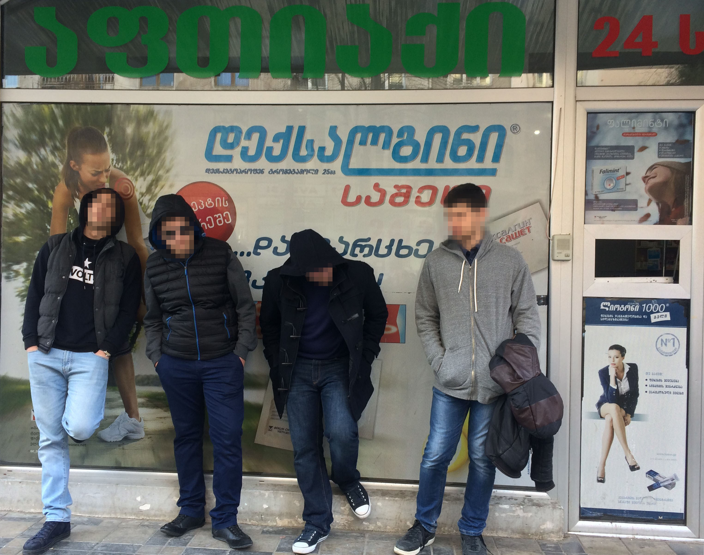
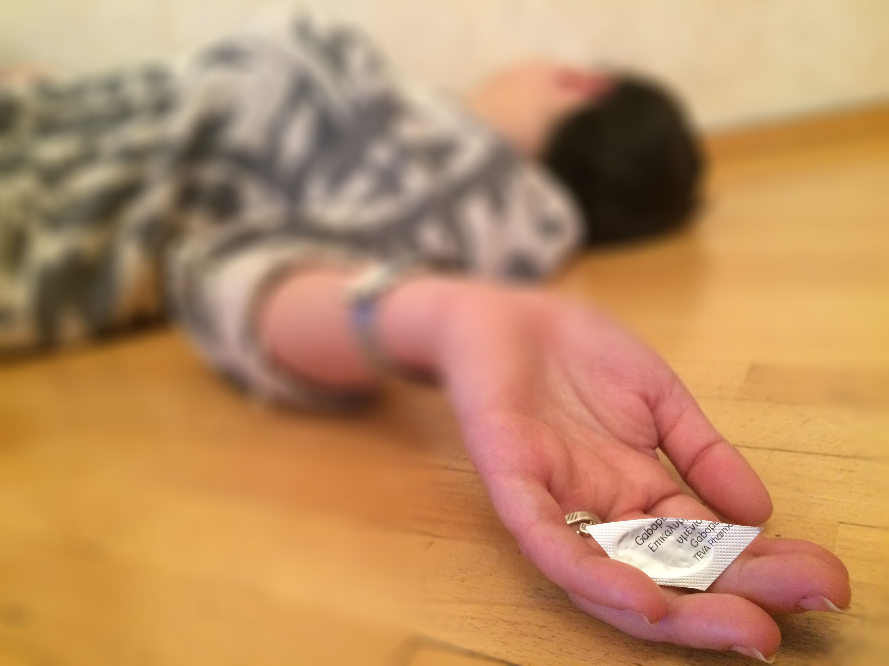

Psychotropic Drugs Without Prescriptions are Still on Sale
By Thea Ghvinadze
A total of 114 administrative offence reports were filed and 12 pharmacies have been forced to stop operating in Georgia in 2015 because of the illegal distribution of pharmaceutical products. Monitored by the State Regulation Agency for Medical Activities, the medicines include narcotics, psychotropic medicines and medicines containing specially controlled psychoactive substances.
The offenses are violations of the Georgian Law of Medicine and Pharmaceutical Activities Chapter 6, which prohibits selling psychotropic products without prescription.
The law of Medicine and Pharmaceutical Activities was adopted in July 2013 and has been amended. Selling psychotropic medicines without a doctor’s consultation was already illegal, but the new regulation created a special control group and specifically identified the list of medicines which should be prohibited without prescription. In January 2014, the Ministry of Labor, Health and Social Affairs reclassified some products (Baklofen, Gabapentin, Zopiclone, Zaleplon and Tropicamide) to the special control group. The alarming level of consuming them like narcotics by Georgian youth was named as the main reason for the changes.
Non-therapeutic consumption of psychotropic medicines is very dangerous for health. According to narcotics expert Nikoloz Kapanadze: “it can cause loss of memory and concentration, radical changes of personality, severe physical problems, psychosis, anxieties, warped ideas, delusion, epilepsy symptoms and other side effects.” At the same time, psychotropic medicines are psychologically and physically addictive and to stop using them can be very painful.
“An effective way to stop non-therapeutic use of psychotropic medicines is complex treatment in specialized institutions, which should definitely include intensive psychotherapy as well,” Kapanadze says. "I’ve heard several times that despite the fact that selling psychotropic medicines without prescription is prohibited, some pharmacies still continue illegal trade."
I decided to make an experiment and find out whether it was true or not.
And it was true. In December 2015 I asked one of my friends to take part in my experiment and try to buy a psychotropic medicine without prescription. My friend agreed. He went to Tbilisi center, entered a pharmacy and bought Gabapentin (600mg) for 6 GEL without any problems. Gabapentin is one of those pharmaceutical products in the group consider to have a very high level of non-therapeutic use and risk to citizens. The pharmacist did not ask my friend for a prescription or any other documents; she just sold the medicine as if it was legal to do so.
This experiment indicated that today psychotropic drugs are still very cheap and easy to access illegally. Despite the regulations, consumers can still know exact pharmacies where they can be bought without prescriptions. According to Kapanadze, there are no official statistics available but, informal data indicates that a majority of youth (including those under 18) have tried a psychotropic product for a non-therapeutic reason at least once in his/her life.
> The distribution of psychotropic medicines in Georgia is controlled by the State Regulation Agency for Medical Activities. Each pharmacy is checked at least once a year. Psychotropic drugs are accounted for carefully, so illegal actions can hardly be hidden. During the inspection process, the pharmacy should present the prescriptions, warrants or agreements. Without their existence, the inspection group concludes that these drugs have been sold without prescriptions. When this violation occurs, the pharmacy is put under intensified inspection, which includes more frequent checking.
Under the Georgian Law for Medicine and Pharmaceutical Activities, the amount of penalty for the first violation is 6000 GEL. In case of second violations, the penalty is doubled. The third violation penalizes the pharmacy 12,000GEL again, and if the violation happens for the fourth time in one calendar year, the pharmacy is ordered to stop operating. As mentioned above, 114 administrative offence reports were filed and 12 pharmacies were ordered to stop operating in 2015. There were 250 administrative offence reports and 11 pharmacies ordered to stop operating in 2014.
According to Nana Shashiashvili, the head of inspection administration at the Department of Pharmaceutical Activities in the State Regulation Agency for Medical Activities, violations happen quite often, but not because of weak inspections.
“Despite the fact that we cancel the permission for pharmaceutical activity, the offender just registers another limited company, changes the director, requests the license at the same administrative address, and continues unlawful action. Behind the new limited company there is still the same offender. And we don’t have any regulation in order to deny giving the license to him again. We face these kind of experiences very often in our practice,” Shashiashvili says. She added that the Regulation Agency has penalized the same owners under different company names several times.
“Specific changes should be made in the procedure for giving licenses in order to make the re-opening process stricter for offenders. The inspection process has no defects,” she says.
Shashiashvili states that any regulation which can’t ensure the prevention of a considerable number of violations needs to be reviewed. The State Regulation Agency for Medical Activities has prepared some legislative initiatives in order to decrease violations.
The first initiative states that the director or the responsible person of the pharmacy should be prosecuted. Another initiative advises limiting the number of the pharmacies, based on geographic and demographic principles. Under a proposed regulation, a person will not be allowed to open a pharmacy on the same site as one that has already been ordered to stop operating due to violations. This will apply only to authorized pharmacies which satisfy specific requirements in order to be allowed to distribute psychotropic medicines.
The State Regulation Agency for Medical Activities is now waiting for decisions from several governmental institutions in order to apply to the Parliament as soon as possible.
Any citizen who discovers any kind of violation can call the hotline of Ministry of Labor, Health and Social Affairs (1505) and give the information to them.


2015 წელს საქართველოში ფარმაცევტული პროდუქტის უკანონო მიმოქცევის საფუძველზე, შედგა 114 ადმინისტრაციული ოქმი და 12 ავტორიზებულ აფთიაქს ფარმაცევტული საქმიანობის ნებართვა გაუუქმდა. სამედიცინო საქმიანობის სახელმწიფო რეგულირების სააგენტოზე დაყრდნობით, აღნიშნული ფარმაცევტული პრეპარატები შეიცავს ნარკოტიკულ საშუალებებს, ფსიქოტროპულ ნივთიერებებსა და ფსიქოაქტიური ნითიერებების შემცველ კომბინირებულ სამკურნალო საშუალებებს.
სამართალდარღვევის საფუძველი არის საქართველოს წამლისა და ფარმაცევტული საქმიანობის შესახებ კანონის მე-6 თავის უგულებელყოფა, რომელიც ფსიქოტროპული პრეპარატის რეცეპტის გარეშე გაყიდვას კრძალავს.
საქართველოს კანონი წამლისა და ფარმაცევტული საქმიანობის შესახებ 2013 წლის ივლისში ამოქმედდა. ფსიქოტროპული მედიკამენტების გაყიდვა მანამდეც არაკანონიერი იყო, თუმცა ახალმა რეგულაციამ კონკრეტულად განსაზღვრა იმ წამლების სია, რომელთა რეცეპტის გარეშე გაყიდვაც აკრძალული უნდა იყოს. 2014 წლის იანვარში შრომის, ჯანმრთელობისა და სოციალური დაცვის სამინისტრომ გარკვეული მედიკამენტების (ბაკლოფენი, გაბაპენტინი, ზოპიკლონი, ზალეპლონი და ტროპიკამიდი) რეკლასიფიკაცია მოახდინა და ისინი განსაკუთრებულად კონტროლირებად ჯგუფს მიაკუთვნა. ამ ცვლილების მთავარ მიზეზად ქართველი ახალგაზრდების მიერ აღნიშნული მედიკამენტების ნარკოტიკული თრობის მიღწევის მიზნით გამოყენების საგანგაშო მაჩვენებელი დასახელდა.
ფსიქოტროპული მედიკამენტების არათერაპიული მიზნით მოხმარება ჯანმრთელობისთვის ძალიან საზიანოა. ნარკოლოგი ნიკოლოზ კაპანაძე აღნიშნავს, რომ ამან, შესაძლოა, გამოიწვიოს მეხსიერებისა და კონცენტრაციის დაკარგვა, ხასიათის რადიკალური ცვლილება, სერიოზული ფიზიკური პრობლემები, ფსიქოზი, შფოთვა, აკვიატებული იდეები, ბოდვა, ეპილეფსიის სიმპტომები და სხვა გვერდითი მოვლენები. ამასთან, ფსიქოტროპული მედიკამენტები ფიზიკურ და ფსიქოლოგიურ დამოკიდებულებასაც იწვევს და მათი მოხმარების შეწყვეტა, შესაძლოა, საკმაოდ მტკივნეულიც იყოს.
„ფსიქოტროპული მედიკამენტების არათერაპიული მიზნით მოხმარების შეწყვეტის ეფექტური გზა არის კომპლექსური მკურნალობა სპეციალურ დაწესებულებებში, რომელიც ინტენსიურ ფსიქოთერაპიასაც აუცილებლად უნდა მოიცავდეს“, - აღნიშნავს კაპანაძე. „ ხშირად მსმენია, რომ მიუხედავად იმისა, რომ ფსიქოტროპული მედიკამენტების რეცეპტის გარეშე გაყიდვა აკრძალულია, ზოგიერთი აფთიაქი მაინც აგრძელებს არაკანონიერ ვაჭრობას.“
მე გადავწყვიტე, ჩამეტარებინა ექსპერიმენტი და გამერკვია, სიმართლე იყო ეს თუ - არა.
ამ ფაქტის სიმართლეში მალე დავრწმუნდი. 2015 წლის დეკემბერში ჩემს მეგობარს ფსიქოტროპული მედიკამენტის რეცეპტის გარეშე შეძენა ვთხოვე. ისიც დამთანხმდა და თბილისის ცენტრში მდებარე ერთ-ერთ აფთიაქში "გაბაპენტინი" ( 500 მგ) 6 ლარად უპრობლემოდ იყიდა. გაბაპენტინი სწორედ იმ ფარმაცევტულ პროდუქტთაგანია, რომელთა არათერაპიული მიზნით მოხმარების მაღალი მაჩვენებელი მოქალაქეებისთვის საკმაოდ დიდ საფრთხეს წარმოადგენს. ფარმაცევტმა ჩემს მეგობარს არც რეცეპტი და არც რაიმე სახის სხვა დოკუმენტი მოსთხოვა; მან წამალი გაყიდა ისე, თითქოს მისი მოქმედება კანონს არ ეწინააღმდეგებოდა.
ექსპერიმენტმა ცხადყო, რომ ფსიქოტროპული მედიკამენტები დღესაც ძალიან იაფია და არაკანონიერი გზით ადვილად ხელმისაწვდომიც. არსებული რეგულაციების მიუხედავად, მომხმარებლებს მაინც აქვთ შესაძლებლობა იცოდნენ, რომელ აფთიაქშია შესაძლებელი მათი რეცეპტის გარეშე შეძენა. კაპანაძე აღნიშნავს, რომ არ არსებობს ოფიციალური სტატისტიკა, თუმცა არაფორმალური მონაცემები მიუთითებს, რომ ახალგაზრდების უმეტესობას ფსიქოტროპული მედიკამენტი არათერაპიული მიზნით ერთხელ მაინც მოუხმარია.
საქრთველოში ფსიქოტროპული მედიკამენტების მიმოქცევას სამედიცინო საქმიანობის სახელმწიფო რეგულირების სააგენტო აკონტროლებს. თითოეული აფთიაქი წელიწადში ერთხელ მაინც მოწმდება. ფსიქოტროპლი მედიკამენტები საკმაოდ მკაცრად აღირიცხება, შესაბამისად, არალეგალური მოქმედებები რთულად თუ დაიმალება. შემოწმების პროცესის ფარგლებში, აფთიაქმა უნდა წარმოადგინოს რეცეპტები, ბრძანებები ან ხელშეკრულებები. მათი არარსებობის შეთხვევაში, ინსპექტირების ჯგუფი ადგენს, რომ მედიკამენტები რეცეპტის გარეშე გაიყიდა. აღნიშნული დარღვევის დროს აფთიაქი ექვემდებარება ინტენსიურ გამოკვლევას, რომელიც უფრო ხშირ შემოწმებას გულისხმობს.
საქართველოს წამლისა და ფარმაცევტული საქმიანობის შესახებ კანონის თანახმად, ფარმაცევტული პროდუქტის რეალიზაციის წესის დარღვევა გამოიწვევს დაჯარიმებას 6000 ლარის ოდენობით. აღნიშნული ქმედების განმეორებით ჩადენისას ჯარიმა ორმაგდება. მესამე დარღვევის შემთხვევაში აფთიაქი ისევ 12000 ლარით ჯარიმდება, ხოლო თუ ერთი კალენდარული წლის განმავლობაში აფთიაქი მსგავს ქმედებაში მეოთხედ იქნება შემჩნეული, მისი მოქმედების ნებართვა უქმდება. როგორც ზემოთ აღვნიშნე, 2015 წელს საქართველოში ფარმაცევტული პროდუქტის უკანონო მიმოქცევის საფუძველზე შედგა 114-ე ადმინისტრაციული ოქმი და 12 ავტორიზებულ აფთიაქს მოქმედების ნებართვა გაუუქმდა. 2014 წელს 250 ადმინისტრაციული ოქმი შედგა და 11-მა აფთიაქმა შეწყვიტა ფუნქციონირება.
სამედიცინო საქმიანობის სახელმწიფო რეგულირების სააგენტოს ფარმაცევტული საქმიანობის დეპარტამენტის ინსპექტირების სამმართველოს უფროსი ნანა შაშიაშვილი ამბობს, რომ კანონი ხშირად ირღვევა, თუმცა ეს სუსტი ინსპექტირების ბრალი სულაც არ არის.
„მიუხედავად იმ გარემოებისა, რომ ჩვენ ფარმაცევტული საქმიანობის ნებართვას ვაუქმებთ, კანონდამრღვევი არეგისტრირებს სხვა კომპანიას, ცვლის დირექტორს, იღებს ახალ ლიცენზიას იმავე ადმინისტრაციულ მისამართზე და ისევ აგრძელებს არაკანონიერ ქმედებას. ახალი კომპანიის უკან ისევ იგივე კანონდამრღვევი იმალება. და ჩვენ არ გვაქვს არანაირი რეგულაცია, რომელიც მისთვის ლიცენზიის თავიდან მინიჭებას შეუშლის ხელს. ჩვენს პრაქტიკაში მსგავს შემთხვევებს ძალიან ხშირად ვაწყდებით“ - განმარტავს შაშიაშვილი. მან ასევე აღნიშნა, რომ განსხვავებული კომპანიების უკან მდგარი ერთი და იგივე მფლობელები რეგულირების სააგენტოს რამდენჯერმე დაუჯარიმებია.
“გარკვეულწილად უნდა შეიცვალოს ის პროცედურა, რომლის საფუძველზეც ლიცენზიები გაიცემა იმისთვის, რომ სამართალდამრღვევის მიერ აფთიაქის თავიდან გახსნა უფრო მკაცრად გაკონტროლდეს. თავად ინსპექტირების პროცესს ნაკლი არ აქვს“ - აღნიშნავს ის.
შაშიაშვილი განმარტავს, რომ ნებისმიერი რეგულაცია, რომელიც კანონდარღვევის პრევენციას ვერ განაპირობებს, თავიდან უნდა გადაიხედოს. სამედიცინო საქმიანობის სახელმწიფო რეგულირების სააგენტოს დარღვევათა შემცირების მიზნით მომზადებული აქვს გარკვეული საკანონმდებლო ინიციატივები.
პირველი ინიციატივის თანახმად, აფთიაქის დირექტორი ან პასუხისმგებელი პირი უნდა გასამართლდეს. მეორე ინიციატივა ეხება აფთაქების რაოდენობის განსაზღვრას გეორგაფიული და დემოგრაფიული პრინციპის გათვალისწინებით. შემოთავაზებული რეგულაცია განაპირობებს, რომ პირს აღარ ექნება უფლება, აიღოს ფარმაცევტული საქმიანობის ნებართვა სამართალდარღვევის საფუძველზე გაუქმებული აფთიაქის ადმინისტრაციულ მისამართზე. ეს საკანონმდებლო ინიციატივა შეეხება მხოლოდ იმ ავტორიზებულ აფთიაქებს, რომლებიც, სპეციალური მოთხოვნების დააკმაყოფილების საფუძველზე ფსიქოტროპული მედიკამენტების მიმოცქცევას ახორციელებს.
სამედიცინო საქმიანობის სახელმწიფო რეგულირების სააგენტო ამჟამად რამდენიმე სამთავრობო სტრუქტურის გადაწყვეტილებას ელოდება იმისთვის, რომ პარლამენტს რაც შეიძლება მალე მიმართოს.
ნებისმიერ მოქალაქეს, რომლისთვისაც ცნობილი ხდება რაიმე ტიპის სამართალდარღვევის განხორციელების ფაქტი, აქვს შესაძლებლობა, დაუკავშირდეს შრომის, ჯანმრთელობისა და სოციალური დაცვის სამინისტროს ცხელი ხაზის (1505) საშუალებით და მიაწოდოს მათ ინფორმაცია.